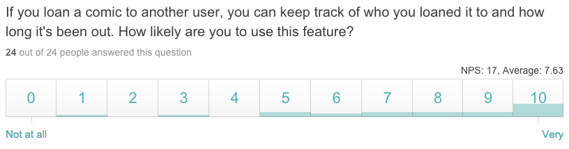
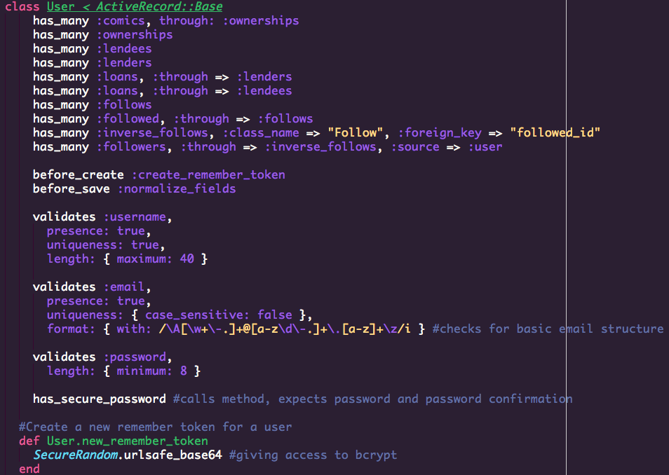

Comic Book Library
A full-stack app designed to catalogue a user's comic books and track their lending, largely completed in a one-week period. A social feature using self-referential associations allows for following other users. Rail's has_secure_method ensures that users can safely login using hashed passwords.
Technologies used: Ruby on Rails, Active Record, Postgresql, HTML, CSS, jQuery, Javascript.
• Github Repository • Live Heroku AppExample User Stories:
These breakdown tasks to make it easier to focus on individual aspects of an app. Separated into "Current" (what I knew I could finish), "Backlog" (what I hoped to get to), and "Icebox" (which I would have to work on after the project ended). I finished all of my Current and most of my Backlog. These are a few of the stories I created.
Current
- As a user, when I sign up, I create an account for the app.
- As a user, when I fill in the new comic form, I create a new comic entry.
- As a user, when I login, I am logged into the app.
- As a user, when I click to follow another user, they are added to my follows.
Backlog
- As a user, when I update a comic's lending status, I can say who currently has it.
- As a user, when I view my comics, I can see which ones I have lent out.
- As a user, after I add an issue, I can edit some of the information
Ice Box
- As a user, when I start putting in a comic, the forms aurocomplete
- As a user, when I search for comics, I get every possible comic.
Find the User Stories on Trello.
The Survey:
After deciding on a topic, I created a survey to help me decide on which aspects of the app to focus on. With only a week to work on the project, the 24 respondents seemed enough for a general look into user desires. Here are a few of the results that I used.
Sample Code
The following code is part of my User Model. This shows the two self-referential associations and part of has_secure_password setup.
{kind=link}